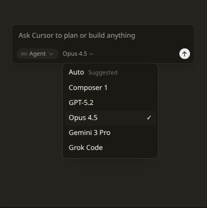
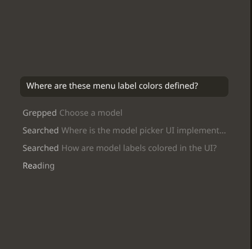

“It was night and day from one batch to another, adoption went from single digits to over 80%. It just spread like wildfire, all the best builders were using Cursor.”
Diana Hu
General Partner, Y Combinator


Trusted every day by millions of professional developers.


Accelerate development by handing off tasks to Cursor, while you focus on making decisions.
Learn about AgentOur custom Tab model predicts your next action with striking speed and precision.
Learn about TabCursor is in GitHub reviewing your PRs, a teammate in Slack, and anywhere else you work.
Learn about Cursor's ecosystem“It was night and day from one batch to another, adoption went from single digits to over 80%. It just spread like wildfire, all the best builders were using Cursor.”
General Partner, Y Combinator
“My favorite enterprise AI service is Cursor. Every one of our engineers, some 40,000, are now assisted by AI and our productivity has gone up incredibly.”

President & CEO, NVIDIA
“The best LLM applications have an autonomy slider: you control how much independence to give the AI. In Cursor, you can do Tab completion, Cmd+K for targeted edits, or you can let it rip with the full autonomy agentic version.”
CEO, Eureka Labs
“Cursor quickly grew from hundreds to thousands of extremely enthusiastic Stripe employees. We spend more on R&D and software creation than any other undertaking, and there's significant economic outcomes when making that process... ”
Co‑Founder & CEO, Stripe
“The most useful AI tool that I currently pay for, hands down, is Cursor. It's fast, autocompletes when and where you need it to, handles brackets properly, sensible keyboard shortcuts, bring-your-own-model... everything is well put together.”
Creator of shadcn/ui
“It's definitely becoming more fun to be a programmer. We are at the 1% of what's possible, and it's in interactive experiences like Cursor where models like GPT-5 shine brightest.”
President, OpenAI
Choose between every cutting-edge model from OpenAI, Anthropic, Gemini, xAI, and Cursor.
Explore models Choose between every cutting-edge model from OpenAI, Anthropic, Gemini, xAI, and Cursor.
Explore models Choose between every cutting-edge model from OpenAI, Anthropic, Gemini, xAI, and Cursor.
Explore models
Jan 22, 2026
Subagents, Skills, and Image Generation
Jan 16, 2026
CLI Agent Modes and Cloud Handoff
Jan 8, 2026
New CLI Features and Improved CLI Performance
Dec 22, 2025
Layout Customization and Stability Improvements
We're making a part of our multi-agent research harness available to try today in preview.
Research · Feb 5, 2026
Over 90% of developers at Salesforce now use Cursor, driving double-digit improvements in cycle time, PR velocity, and code quality.
Customers · Jan 21, 2026
A comprehensive guide to working with coding agents, from starting with plans to managing context, customizing workflows, and reviewing code.
Product · Jan 9, 2026